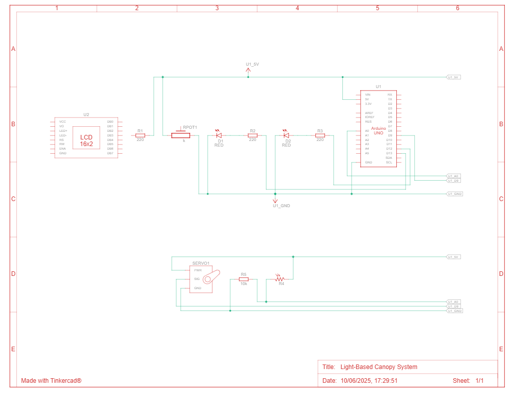

Light-Based Canopy System
An interactive miniature canopy system using Arduino with light-responsive technology
An interactive miniature canopy system using Arduino with light-responsive technology
The Light-Based Canopy project is a miniature adaptive canopy system that responds to ambient light using Arduino. Constructed from recycled cardboard, servo motors, LDR, and LED lighting, this prototype demonstrates smart architecture concepts and is ideal for STEM exhibitions, interactive showcases, and educational demonstrations of light-responsive systems.
Front View

Back View

Side View

Top View
Watch the light-responsive canopy system in action, automatically adjusting to changing light conditions.

Wiring setup showing Electronic Box and Arduino connections
Complete circuit diagram for the light-responsive canopy system